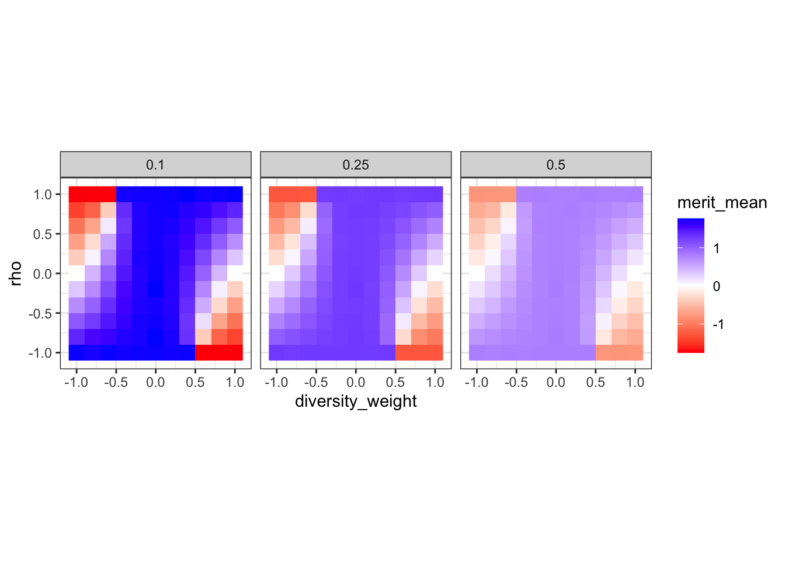
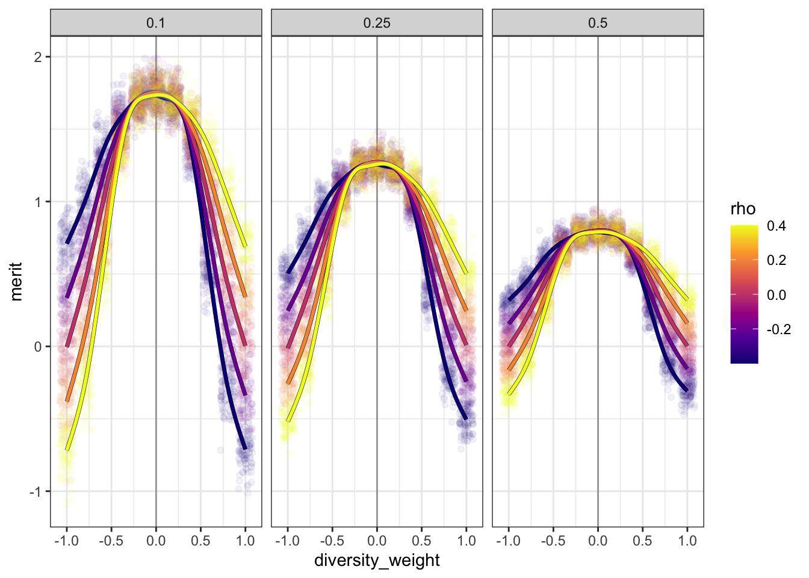
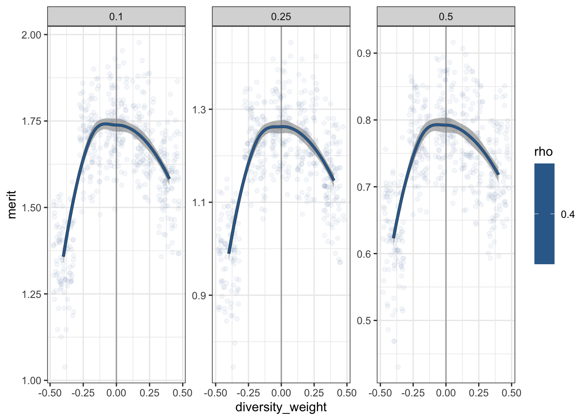
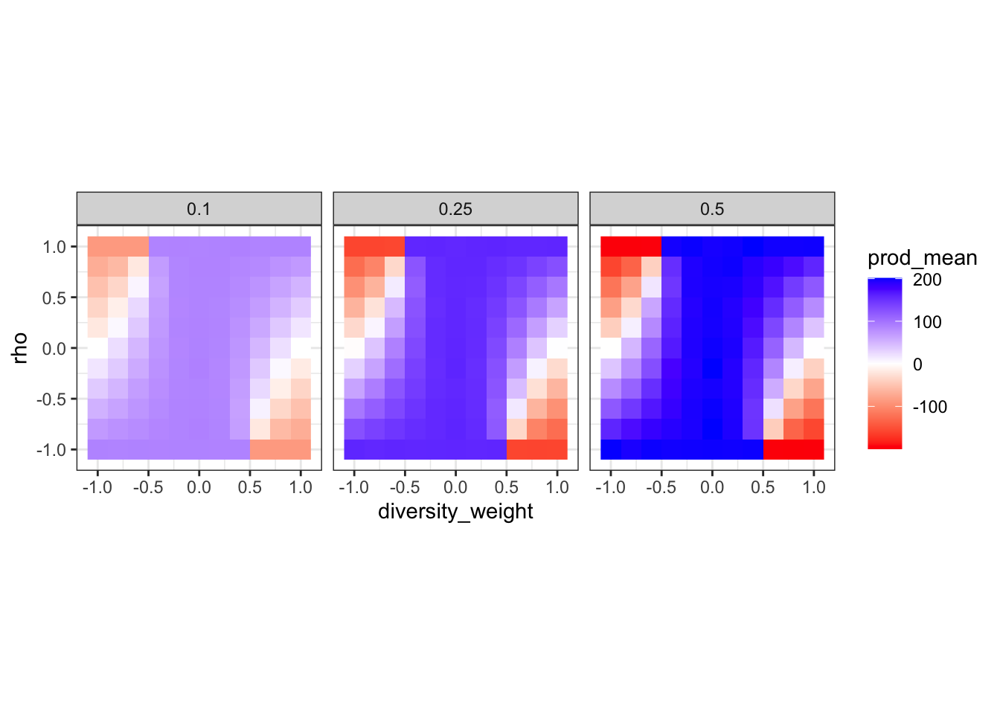
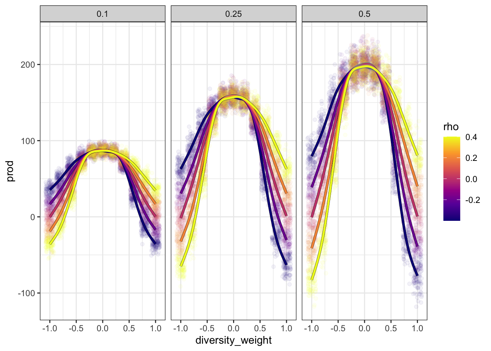
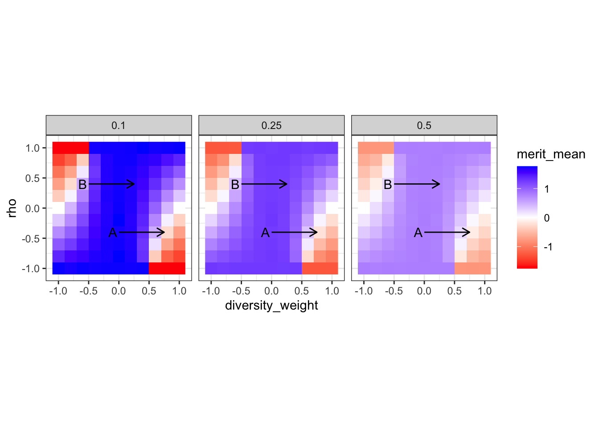

library(tidyverse)
theme_set(theme_bw())
library(purrr) ## >= 1.1 for parallel processing
library(mirai) ## for parallel processing
max_daemons = 10 ## be sure to adjust for your particular machine
library(MASS) ## multivariate Gaussian samples
## utilities
library(tictoc)
library(assertthat)This morning I was reading this paper (sorry I’m too lazy to set up a bibliography file on top of the simulation), which quotes a researcher raising a familiar argument against diversity efforts:
We start employing people based on any criteria other than competency, well, then, of course we’re going to get a … A … A poorer outcome. Competency should be … Ability should be the sole criterion.
To adjust the terminology slightly, according to this argument there’s a tradeoff between diversity and merit, such that if we take contributions to diversity into account (in hiring, research awards, tenure, etc.) the result will be an overall loss of “merit” or “quality”.
As the scare quotes suggest, there are some fundamental conceptual problem with this argument. No one knows what the hell “merit” is, much less how to accurately measure it when making decisions about hiring, etc.; and at best it can mean a wide variety of things, and indeed among these things might be contributions to diversity.
But in this post I want to consider instead the tradeoff assumption itself. If we grant to the conservative1 that there is such a thing as “merit,” that it can be accurately measured, it has a unidimensional structure, and that maximizing it is among the most important goals of hiring, it still doesn’t necessarily follow that giving increased weight to diversity (also assumed to be accurately measurable and unidimensional) will significantly reduce merit. Under some circumstances it might do so; but if, say, merit and diversity are correlated, it might not make much of a difference.
So my question here is not whether there’s a diversity-merit tradeoff, but under what conditions there’s a tradeoff.
Defining the simulation
To investigate question of the conditions for a diversity-merit tradeoff, we’ll set up a very simple simulation of a hiring scenario. We’ll need the following packages:
We start with a pool of potential researchers, each of whom has a merit score and a (contributions to) diversity score. For simplicity, each score will follow a Gaussian (normal) distribution with mean 0 and standard deviation 1. But merit and diversity might be correlated, so we’ll use a multivariate Gaussian, with the correlation coefficient \(\rho\)/rho as one parameter that can be adjusted in the simulation. This will range from 1 (perfect correlation between diversity and merit: the meritorious are also the “most diversity”) to -1 (perfect anticorrelation between diversity and merit: the meritorious are the “least diverse”). In simulate below, this step is accomplished by the nested function draw_pool.
To hire out of the pool, we next calculate a score for each individual in the pool, a weighted sum of merit and diversity:
\[ \textrm{score}_\alpha = \alpha \times \textrm{diversity} + (1 - |\alpha|) \times \textrm{merit} \] We’ll consider weights ranging from 1 (only considering diversity) to 0 (only considering merit) and down to -1 (which amounts to discriminating against diversity, without any consideration for merit).2 This step is done using score_pool below.
The top individuals, by score, will be hired. We’ll consider three different hiring scenarios, where the top 10%, 25%, and 50% are hired. You can think of this as “selectivity,” but I’m thinking of it as “austerity.” While we expect average merit to be greater under greater selectivity, it also means there are many fewer researchers hired, and consequently probably much less research “productivity.”
We’ll look at two outputs from this simulation: mean merit, and “productivity.” We’ll operationalize the latter as the sum of merit across the hired researchers.
These final steps — hiring the top researchers from the pool and calculating their mean merit and productivity — are done by the hire function.
A single iteration of the simulation is handled by the following function:
## n: number of researchers in the pool
## hiring: a vector of the fraction of researchers to hire
simulate = function(rho, diversity_weight, hiring, n = 50) {
draw_pool = function(rho, n = 50) {
Sigma = diag(2) * (1 - rho) + rho
sample = MASS::mvrnorm(n, mu = c(0, 0), Sigma = Sigma)
colnames(sample) = c('merit', 'diversity')
return(sample)
}
score_pool = function(pool, alpha) {
score = alpha * pool[,'diversity'] + (1 - abs(alpha)) * pool[,'merit']
pool = cbind(pool, score)
return(pool)
}
hire = function(hiring, pool) {
library(magrittr)
pool[,'score'] |>
order(decreasing = TRUE) %>%
{head(., hiring * length(.))} %>%
{pool[.,]} %>%
{.[,'merit']} %>%
{list(merit = mean(.), prod = sum(.))}
}
pool = rho |>
draw_pool(n) |>
score_pool(diversity_weight)
tibble::tibble(rho,
diversity_weight,
hiring) |>
dplyr::bind_cols(purrr::map_dfr(hiring, ~ hire(.x, pool)))
}(To take advantage of purrr’s new parallelization feature, we need to nest the functions for each step inside simulate, and reference package functions using :: syntax.)
We’ll wrap this in another function, simulations, which iterates the simulation in parallel.
simulations = function(N, rho, diversity_weight, hiring, n = 50) {
map_dfr(1:N,
in_parallel(\(N)
simulate(rho, diversity_weight, hiring, n),
simulate = simulate,
rho = rho,
diversity_weight = diversity_weight,
hiring = hiring,
n = n),
.id = 'iter')
}Simulation parameters
The simulation parameters are defined below. We’ll use a parameter grid for rho and diversity_weight; it’s more efficient to handle hiring separately. While we’re here, we’ll also calculate the expected length of the output dataframe, and use this in an assertion below.
rho = seq(-1, 1, by = .2)
diversity_weight = seq(-1, 1, by = .2)
hiring = c(.1, .25, .5)
n = 500 ## size of the hiring pool
N = 100 ## num. simulation runs at each parameter combo
params = expand_grid(rho,
diversity_weight)
## Expected number of rows in output
expect_rows = (length(rho) * length(diversity_weight) *
length(hiring) * N) |>
as.integer()
message('Expected number of output rows: ', expect_rows)Expected number of output rows: 36300Run the simulation
In the development script, I nested these lines of code in braces so that I could run them all without highlighting. (This takes several seconds on my machine, so I’m caching it. Wall times might be different as a result of caching.)
{
set.seed(20250714)
daemons(max_daemons)
tic()
dataf = params |>
pmap(~ simulations(N, ..1, ..2, hiring, n)) |>
bind_rows()
assert_that(identical(nrow(dataf), expect_rows))
toc()
daemons(0)
}5.624 sec elapsed[1] 0Alongside the output for each iteration, it’s useful to have just the mean within each combination of parameter values.
dataf_sum = dataf |>
group_by(rho, diversity_weight, hiring) |>
summarize(N = n(),
across(c(merit, prod),
lst(mean, sd))) |>
ungroup() |>
mutate(merit_se = merit_sd / sqrt(N),
prod_se = prod_sd / sqrt(N))`summarise()` has grouped output by 'rho', 'diversity_weight'. You can override
using the `.groups` argument.Analysis
Merit
This tile plot shows the average merit (merit_mean) for each combination of rho (diversity-merit tradeoff), weight \(\alpha\) given to diversity (diversity_weight), and hiring scenario (the panels).
merit_tile = ggplot(dataf_sum,
aes(diversity_weight, rho)) +
geom_raster(aes(fill = merit_mean)) +
scale_fill_gradient2(low = 'red',
mid = 'white',
high = 'blue',
midpoint = 0) +
facet_wrap(vars(hiring)) +
coord_equal()
merit_tile
First, high austerity tends to heighten the effects of diversity weighting (or not): the difference between the maximum and minimum values of mean merit is greatest when only the top 10% are hired, and smallest when the top 50% are hired. Second, within a hiring level, mean merit appears to be maximized when diversity is given zero weight. Third, the effect of weighting diversity depends on \(\rho\), the correlation between merit and diversity. When \(\rho > 0\), then positively weighting diversity doesn’t appear to diminish mean merit very much; while discrimination decreases it sharply.
Let’s plot “transects,” mean merit against diversity for moderate values \(-0.4 \leq \rho \leq 0.4\). We’ll go ahead and include every iteration, and GAM curves across values of \(\rho\).
dataf |>
filter(-0.41 < rho, rho < 0.41) |>
ggplot(aes(diversity_weight, merit,
color = rho)) +
geom_vline(xintercept = 0, color = 'grey65') +
geom_point(position = 'jitter', alpha = .05) +
geom_smooth(aes(group = rho),
color = 'black', linewidth = 1.2) +
geom_smooth(aes(color = rho, group = rho),
linewidth = 1) +
scale_color_viridis_c(option = 'C') +
facet_wrap(vars(hiring))`geom_smooth()` using method = 'gam' and formula = 'y ~ s(x, bs = "cs")'
`geom_smooth()` using method = 'gam' and formula = 'y ~ s(x, bs = "cs")'
These confirm that more extreme weightings of diversity do indeed have less dramatic effects when they’re aligned with \(\rho\). There’s also a “plateau,” roughly independent of \(\rho\) and for \(-0.25 < \alpha < 0.25\). Giving some weight to diversity, but placing more weight on merit, has negligible effects on mean merit.
It also looks like, for \(\rho = 0.4\), mean merit might not be maximized right at \(\alpha = 0\). Let’s zoom in on this area, and let each panel have its own y-axis scale.
dataf |>
filter(0.39 < rho, rho < 0.41,
-.41 < diversity_weight, diversity_weight < .41) |>
ggplot(aes(diversity_weight, merit,
color = rho)) +
geom_vline(xintercept = 0, color = 'grey65') +
geom_point(position = 'jitter', alpha = .05) +
geom_smooth(aes(group = rho),
color = 'black', linewidth = 1.2) +
geom_smooth(aes(color = rho, group = rho),
linewidth = 1) +
# scale_color_viridis_c(option = 'C') +
facet_wrap(vars(hiring), scales = 'free')`geom_smooth()` using method = 'loess' and formula = 'y ~ x'
`geom_smooth()` using method = 'loess' and formula = 'y ~ x'
No, that suggestion appears to be incorrect. The curve is all but completely flat around \(\alpha = 0\).
Productivity
We’ll adapt the visualizations for mean merit to productivity.
ggplot(dataf_sum,
aes(diversity_weight, rho)) +
geom_raster(aes(fill = prod_mean)) +
scale_fill_gradient2(low = 'red',
mid = 'white',
high = 'blue',
midpoint = 0) +
facet_wrap(vars(hiring)) +
coord_equal()
Productivity is much, much greater under less austere hiring; and the effects of weighting diversity or discrimination are more dramatic.
Here’s the “transect” plot:
dataf |>
filter(-0.41 < rho, rho < 0.41) |>
ggplot(aes(diversity_weight, prod,
color = rho)) +
geom_point(position = 'jitter', alpha = .05) +
geom_smooth(aes(group = rho),
color = 'black', linewidth = 1.2) +
geom_smooth(aes(color = rho, group = rho),
linewidth = 1) +
scale_color_viridis_c(option = 'C') +
facet_wrap(vars(hiring))`geom_smooth()` using method = 'gam' and formula = 'y ~ s(x, bs = "cs")'
`geom_smooth()` using method = 'gam' and formula = 'y ~ s(x, bs = "cs")'
Mapping parameters to political imaginaries
For reference, here’s the mean merit tile plot again.
merit_tile +
annotate('segment', x = 0, xend = .75, y = -.4, yend = -.4,
arrow = arrow(length = unit(.1, 'inches'))) +
annotate('text', x = -0.1, y = -.4, label = 'A') +
annotate('segment', x = -.5, xend = 0.25, y = .4, yend = .4,
arrow = arrow(length = unit(.1, 'inches'))) +
annotate('text', x = -.6, y = .4, label = 'B')
The conservative argument — that there’s a tradeoff between diversity and merit — is strongest when
- the status quo is perfectly meritocratic (\(\alpha = 0\))
- diversity and merit are strongly anticorrelated (\(\rho \ll 0\))
- the proposal involves treating diversity as about as important as merit, if not more so (\(\alpha \gg 0.25\)).
I’ve added a moderate version of these conditions as arrow A on the figure. This does correspond to a notable drop in mean merit, especially under austere hiring (or when we’re only considering the “top researchers”).
The contrasting “DEI argument” is strongest when
- the status quo is discriminatory (\(\alpha < 0\))
- diversity and merit are strongly correlated (\(\rho \gg 0\))
- the proposal involves giving diversity some positive weight, but still placing more weight on merit (\(0 < \alpha < 0.25\)).
This corresponds to something like arrow B. Under these conditions, mean merit actually increases, as “diverse” researchers are no longer discriminated against.
It’s striking to me how well this oversimplified model brings out the way our society talks about diversity. The conservative view — generally dominant over the last half century or so — assumes that we’ve already achieved a color-blind ideal, that diverse scholars are eo ipso worse researchers, that the proposal is to all but completely ignore any considerations of merit, and that we’re primarily interested in the “top researchers” or operating under such severe austerity that very few candidates will make the cut. While the contrasting view assumes that discrimination still exists, that “more diverse” researchers are better researchers (perhaps because diversity is considered part of merit), and modestly proposes to give diversity some weight while still emphasizing merit.
Footnotes
For convenience, in this post I’m going to use this label for the position that’s opposed to taking contributions to diversity into account in hiring, etc. I don’t want to use “anti-DEI” because to me that refers to a movement that’s much more angry and often more openly racist than what we see in the quotation.↩︎
In the coefficient on merit, we use the absolute value of \(\alpha\) to ensure symmetry between positive and negative values.↩︎
Reuse
Copyright
Dan Hicks